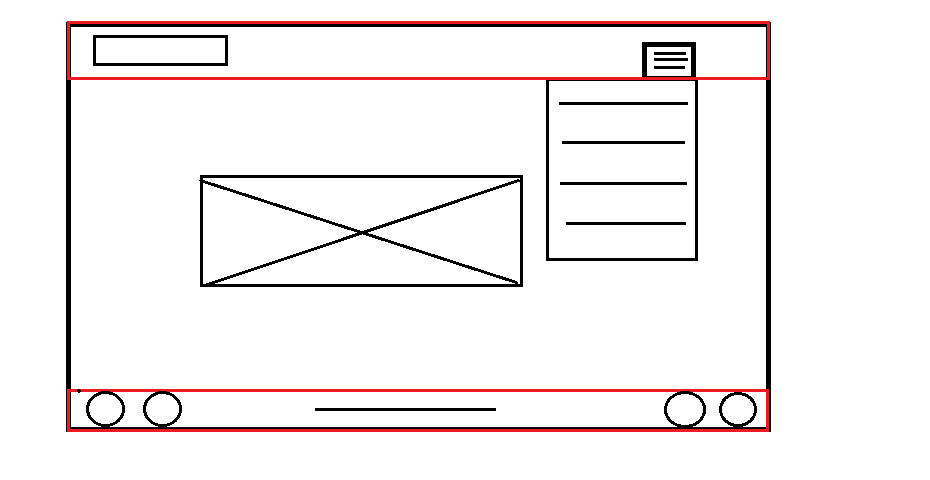
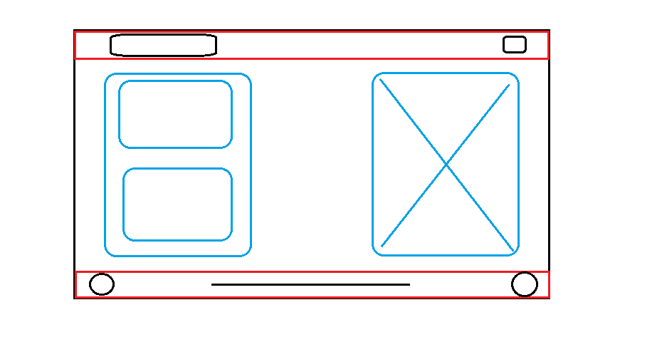
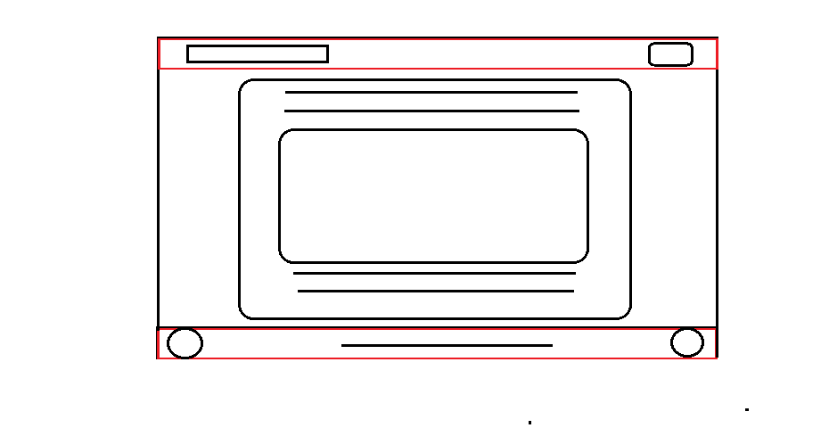

Főoldal
Főoldal Bemutatkozás
Bemutatkozás Érdeklődési kör
Érdeklődési kör Dokumentáció
DokumentációDokumentáció
Main változások:
A főoldal terveitől nem tértem szinte nem tértem el. Egy dolog volt, amit végül elhagytam, azok a láblécen található navigáló gombok lettek volna.

Bemutatkozás változtatások:
Itt is sikerült a tervek szerint megvalósítani az oldalt,egy apró dolog kimaradt, mégpedig az, hogy szerettem volna két képet egymás alá tenni. Viszont ez kis ablak méreten túlságosan széthúzta az oldalt, ezért kihagytam.

Érdeklődési kör tervek:
Az érdeklődési kör almenü a tervek szerint készült el.

Dokumentáció tervek:
Végül a dokumentáció fült is a tervek szerint készítettem el.
Felhasznált források:
youtubra feltöltött videók
w3schools.com